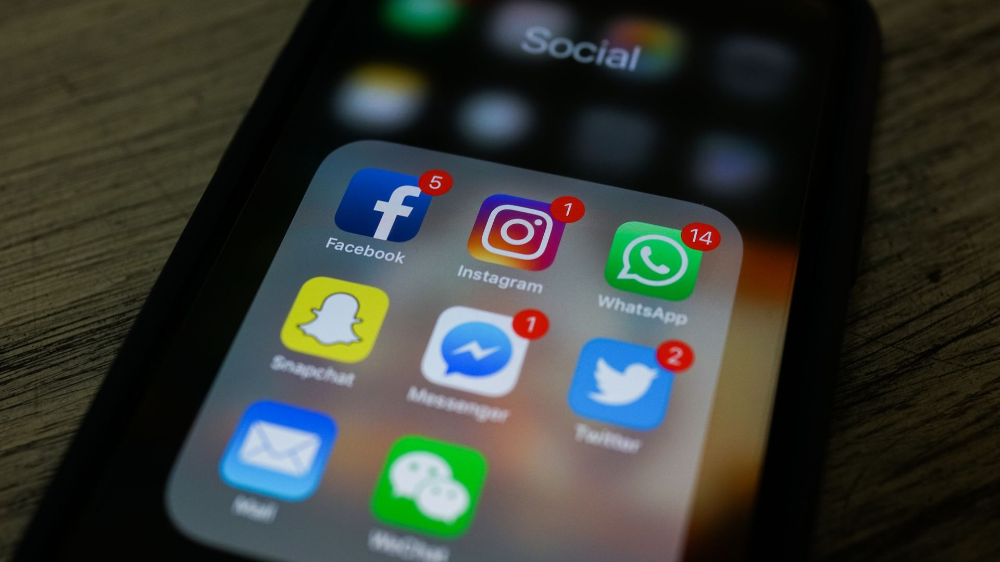
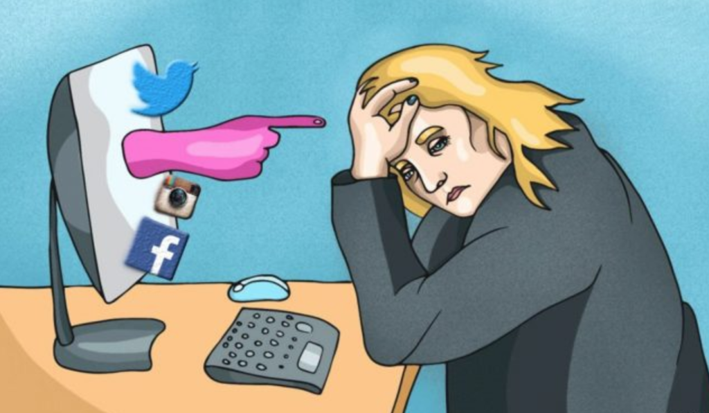

Impact of Social Media
MAY 7 , 2019 BY SUDHAN SHRESTHA

Internet has been growing rapidly these years and with it the social medias are also treading worldwide. The social medias have now been the forms of internet communications now days. Mobile devices have seemed to have created a massive impact on the internet and the idea of staying connected to it as almost every person now has a smartphone and with which they connect to the internet and in some way end up in one of these social media sites.
Most of the social media sites are designed in a way to get us hooked up in them, these sites are addictive due to their such design and the new contents that gets showed in them such as photos, posts and videos. Social medias have definitely helped to connect the world, but these have their own negative as well as positive impacts.

We tend to spend most of our time in social medias and waste our valuable time meaninglessly scrolling through the feeds of social media. Social media has been found to be addictive and divert our mind form doing works. Social media has also found to have cause depression among people as they see the lavish lifestyle of people and sometimes relatives, they tend to think their life are boring and get depressed. Social media has also caused people to get addicted to it for getting more followers and likes on their photos and post which makes them spend time and effort in their posts and photos. Many suicides are also caused due to the break-ups caused in the relationships built on these social sites.
Although these sites have done a great job of connecting the world, but their negative impacts are not to be overlooked. Thus, these social media sites not be overused and children specially should not be allowed to used these sites as they might be exposed to some exploit content which might disturb their mental behavior.